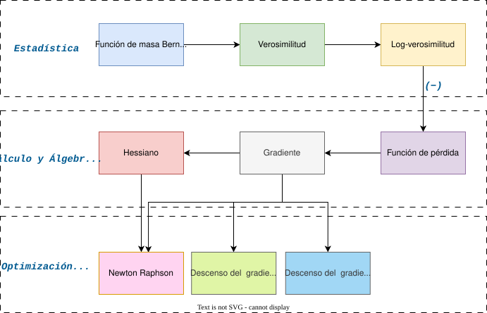
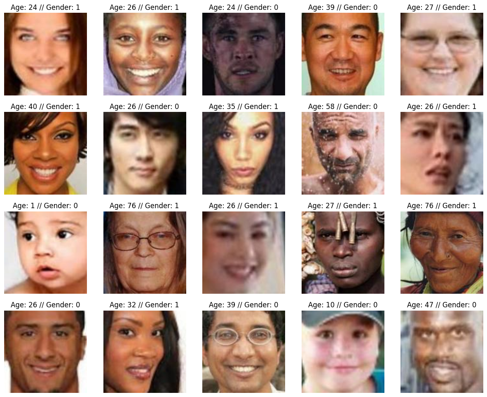

Regresión logística sin caja negra: estadística, optimización y algoritmos
¿Qué haremos hoy?
En este post vamos a desarmar la regresión logística y entender qué ocurre realmente detrás de la “caja negra” cuando entrenamos un modelo de clasificación binaria. El objetivo no es usar librerías, sino comprender el proceso completo desde primeros principios.
Partiremos desde la PMF de la distribución Bernoulli y construiremos paso a paso la función de verosimilitud, su versión logarítmica y la función de pérdida. A partir de ahí, derivaremos analíticamente el gradiente y el Hessiano que permiten entrenar el modelo mediante métodos de optimización.
Una vez formulado el problema de optimización, analizaremos y compararemos distintos métodos iterativos como Gradient Descent, Gradient Descent con Backtracking y Newton-Raphson, tanto desde un punto de vista algorítmico como práctico.
Finalmente, presentaremos una demo reproducible donde se compara el comportamiento de estos métodos en términos de convergencia, número de iteraciones y costo computacional.
Aunque el foco estará en la regresión logística, mostraremos cómo este modelo puede entenderse como un caso particular de los Modelos Lineales Generalizados (GLM), sentando las bases para extender este razonamiento a otros modelos probabilísticos.
El siguiente diagrama resume el recorrido completo desde la formulación estadística de la regresión logística hasta los algoritmos de optimización utilizados para entrenarla, destacando explícitamente qué información utiliza cada método.

Un poco de contexto teórico
Antes de entrar en derivaciones y algoritmos, es importante sentar las bases conceptuales que nos permitirán entender qué es realmente la regresión logística y por qué su entrenamiento se reduce a un problema de optimización bien definido.
Clasificación binaria y probabilidad
En un problema de clasificación binaria, la variable respuesta puede tomar
únicamente dos valores, típicamente representados como 0 y 1.
Desde un punto de vista probabilístico, esto se modela naturalmente mediante una
distribución Bernoulli.
En lugar de predecir directamente una etiqueta, el modelo estima la probabilidad, y toma una decisión a partir de ella. $$P(Y = 1 \mid x)$$
Ejemplo: Predecir si un cliente abandonará un servicio (sí / no) en función de sus características.
La regresión logística como modelo probabilístico
La regresión logística no es simplemente una función sigmoide aplicada a los datos. Es un modelo probabilístico donde la probabilidad de éxito se expresa como una función del predictor lineal:
$$\eta = x^\top \beta, \quad p = \sigma(\eta)$$
Donde η es el predictor lineal, β son los coeficientes del modelo,
y σ(·) es la función sigmoide que mapea cualquier valor real al intervalo (0, 1).
Esta formulación permite conectar directamente la estadística (distribución Bernoulli)
con la optimización, ya que todos los parámetros del modelo aparecen únicamente a través
de η.
Regresión logística como un caso de GLM
Desde una perspectiva más general, la regresión logística puede entenderse como un caso particular de los Modelos Lineales Generalizados (GLM).
- Distribución: Bernoulli
- Predictor lineal: η = Xβ
- Función de enlace: logit
Este marco unifica la regresión logística con otros modelos ampliamente utilizados, como la regresión de Poisson o la regresión Gamma, aunque en este artículo nos enfocaremos exclusivamente en el caso Bernoulli.
De la estadística a la optimización
Una vez definida la distribución del modelo, el siguiente paso consiste en estimar
los parámetros β. Esto se realiza mediante el principio de
máxima verosimilitud.
Para facilitar el análisis y la implementación, se trabaja con la log-verosimilitud y, de forma equivalente, con la función de pérdida, que se obtiene como su negativo.
A partir de esta función de pérdida es posible derivar analíticamente el gradiente y el Hessiano, lo que permite entrenar el modelo utilizando distintos métodos de optimización iterativos.
Descenso del gradiente
El descenso del gradiente es un método iterativo de optimización que ajusta los parámetros del modelo moviéndose en la dirección opuesta al gradiente de la función de pérdida.
La idea central es simple: en cada iteración se calcula la pendiente local de la función y se da un pequeño paso en la dirección que más reduce su valor.
Para comprender completamente cómo funciona este método, es necesario introducir su principal hiperparámetro: el tamaño del paso o learning rate.
El learning rate controla qué tan grande es el desplazamiento que se realiza en cada iteración. Si el paso es demasiado grande, el algoritmo puede divergir; si es demasiado pequeño, la convergencia será muy lenta.
En otras palabras, el learning rate determina el equilibrio entre velocidad de convergencia y estabilidad del algoritmo.
Descenso del gradiente con Backtracking
El descenso del gradiente con backtracking es una extensión del método clásico que busca seleccionar automáticamente un tamaño de paso adecuado en cada iteración.
En lugar de fijar el learning rate de antemano, este método lo ajusta dinámicamente evaluando si el nuevo punto produce una reducción suficiente de la función de pérdida.
Este proceso se basa en una condición conocida como la condición de Armijo, que garantiza que cada paso contribuya de manera efectiva al proceso de optimización.
El backtracking introduce un pequeño costo computacional adicional, ya que puede requerir varias evaluaciones de la función de pérdida por iteración.
Sin embargo, a cambio se obtiene un algoritmo más estable y menos sensible a la elección manual de hiperparámetros.
Newton-Raphson
El método de Newton-Raphson es un algoritmo de optimización de segundo orden que utiliza información adicional sobre la curvatura de la función de pérdida.
Además del gradiente, este método emplea el Hessiano, una matriz de segundas derivadas que describe cómo cambia la pendiente de la función en distintas direcciones.
En cada iteración, Newton–Raphson calcula un desplazamiento resolviendo un sistema de ecuaciones lineales, lo que permite aproximar directamente el punto óptimo local.
Gracias a esta información adicional, el método suele converger en menos iteraciones que los métodos de primer orden.
No obstante, este beneficio viene acompañado de un mayor costo computacional y de memoria, especialmente cuando el número de parámetros del modelo es grande.
Enfoque analítico
En esta sección, desglosaremos paso a paso las derivaciones matemáticas que sustentan la regresión logística. Comenzaremos desde la función de masa de probabilidad (PMF) de la distribución Bernoulli y avanzaremos hasta obtener las expresiones del gradiente y el Hessiano necesarias para los métodos de optimización.
Función de masa de probabilidad (PMF)
La función de masa de probabilidad (PMF) de una variable aleatoria Y que sigue una distribución Bernoulli está dada por:
La distribución Bernoulli puede verse como un caso particular de la distribución Binomial cuando se
considera una única realización (n = 1) [1].
$$P(Y = y) = p^y (1 - p)^{1 - y}, \quad y \in \{0, 1\}$$
Función de verosimilitud
La función de verosimilitud mide qué tan bien un valor del parámetro del modelo explica los datos observados. En este enfoque, los datos se consideran fijos y el parámetro es la cantidad que se ajusta.
Partiendo de la función de masa de probabilidad de la distribución Bernoulli y asumiendo observaciones independientes, la verosimilitud se obtiene como el producto de las probabilidades asociadas a cada observación.
Nota: La independencia de las observaciones es una suposición clave que simplifica el cálculo de la verosimilitud al permitir expresar la probabilidad conjunta como el producto de probabilidades individuales.
Entonces, obtenemos la función de verosimilitud multiplicando las PMF de cada observación con parámetro
p.
$$ \text{Si } Y_1, \ldots, Y_n \sim \text{Bernoulli}(p) $$ $$ L(\beta) = \prod_{i=1}^{n} p_i^{y_i}(1-p_i)^{1-y_i}, \qquad p_i = \sigma(\eta_i) = \frac{1}{1+e^{-\eta_i}}, \qquad \eta_i = x_i^\top \beta $$
Función de log-verosimilitud
En la práctica, rara vez trabajamos directamente con la función de verosimilitud. Al tratarse de un producto de muchas probabilidades, su valor puede volverse extremadamente pequeño a medida que aumenta el número de observaciones, lo que dificulta su interpretación y cálculo numérico.
Para evitar este problema, es común trabajar con la log-verosimilitud. Al aplicar el logaritmo, el producto de probabilidades se transforma en una suma, lo que simplifica los cálculos y hace más estable el proceso de optimización, sin alterar el valor del parámetro que maximiza la función.
$$ \ell(\beta) = \log L(\beta) = \sum_{i=1}^{n}\left[ y_i\log(p_i) + (1-y_i)\log(1-p_i) \right] $$
Función de pérdida
A partir de la log-verosimilitud podriamos realizar los siguientes calculos. Sin embargo, se suele trabajar con la función de pérdida, que es simplemente el negativo de la log-verosimilitud.
El por qué de esto radica en que muchos algoritmos de optimización están formulados para minimizar una función de pérdida en lugar de maximizar una función de verosimilitud. Sí, solo eso!
Minimizar la función de pérdida es equivalente a maximizar la log-verosimilitud, por lo que ambos enfoques conducen a los mismos parámetros óptimos.
Ejemplo: Imagina que debes elegir la mejor de dos opciones. A la primera le damos una puntuación de 10 y a la segunda una puntuación de 2. Si nuestro objetivo es maximizar la puntuación, elegimos claramente la primera opción. Ahora pensemos el problema al revés. En lugar de trabajar con una puntuación, definimos un “error” que es simplemente el negativo de esa puntuación. La primera opción tendrá un error de -10 y la segunda un error de -2. Si nuestro objetivo es minimizar el error, volvemos a elegir la primera opción.
Así, la función de pérdida para la regresión logística se expresa como:
$$ \mathcal{L}(\beta) = -\ell(\beta) \qquad\Rightarrow\qquad \mathcal{L}(\beta) = -\sum_{i=1}^{n}\left[ y_i\log(p_i) + (1-y_i)\log(1-p_i) \right] $$
Gradiente de la función de pérdida
Una vez que hemos definido la función de pérdida, el siguiente paso es encontrar los valores del parámetro que la hacen lo más pequeña posible. Para ello, necesitamos saber en qué dirección debemos movernos para reducir el error.
El gradiente cumple exactamente ese rol: indica la dirección en la que la función de pérdida crece más rápido. Si queremos minimizar la pérdida, simplemente nos movemos en la dirección opuesta.
Una forma intuitiva de pensarlo es imaginar una pendiente. El gradiente nos dice hacia dónde está la subida más empinada; si queremos bajar, caminamos en sentido contrario.
Para cálcular la gradiente de manera analítica, realizamos la derivada parcial de la función de pérdida con
respecto a los parámetros β.
$$ \frac{\partial \mathcal{L}(\beta)}{\partial \beta} = -\sum_{i=1}^{n} \frac{\partial}{\partial \beta} \left[ y_i\log(p_i) + (1-y_i)\log(1-p_i) \right] $$ $$ = -\sum_{i=1}^{n}\left[ y_i\frac{\partial}{\partial \beta}\log(p_i) + (1-y_i)\frac{\partial}{\partial \beta}\log(1-p_i) \right] \tag{1} $$
Ahora, nos enfocamos en derivar cada uno de los términos dentro de la suma en (1).
Recordando que la derivada del logaritmo es: $$ \frac{d}{dx}\log(f(x)) = \frac{1}{f(x)}\frac{df(x)}{dx} $$ Podemos aplicar esta regla a cada término en (1). $$ \frac{\partial \log(p_i)}{\partial \beta} = \frac{1}{p_i}\frac{\partial p_i}{\partial \beta} \tag{2} $$ $$ \frac{\partial \log(1-p_i)}{\partial \beta} = \frac{1}{1-p_i}\frac{\partial(1-p_i)}{\partial \beta} = \frac{1}{1-p_i}\left(-\frac{\partial p_i}{\partial \beta}\right) = -\frac{1}{1-p_i}\frac{\partial p_i}{\partial \beta} \tag{3} $$
Sustituyendo (2) y (3) en (1), obtenemos: $$ \frac{\partial \mathcal{L}(\beta)}{\partial \beta} = -\sum_{i=1}^{n}\left[ y_i\left(\frac{1}{p_i}\frac{\partial p_i}{\partial \beta}\right) + (1-y_i)\left(-\frac{1}{1-p_i}\frac{\partial p_i}{\partial \beta}\right) \right] $$ $$ = -\sum_{i=1}^{n}\left[ \left(\frac{y_i}{p_i}-\frac{1-y_i}{1-p_i}\right)\frac{\partial p_i}{\partial \beta} \right] \tag{4} $$
Ahora, necesitamos calcular \( \partial p_i / \partial \beta \). Recordando que \( p_i = \sigma(\eta_i) \) y \( \eta_i = x_i^\top \beta \), aplicamos la regla de la cadena: $$ \frac{\partial p_i}{\partial \beta} = \frac{\partial p_i}{\partial \eta_i} \frac{\partial \eta_i}{\partial \beta} \tag{5} $$
Derivemos primero el último término de (5) porque es un poco más sencillo: $$ \frac{\partial \eta_i}{\partial \beta} = \frac{\partial}{\partial \beta}(x_i^\top \beta) = x_i \tag{6} $$
Ahora derivemos el primer término de (5) recordando que: $$ p_i = \sigma(\eta_i) = \frac{1}{1+e^{-\eta_i}} = \left( 1 + e^{-\eta_i} \right)^{-1} $$
Además, observamos que: $$ 1 - p_i = 1 - \frac{1}{1 + e^{-\eta_i}} = \frac{e^{-\eta_i}}{1 + e^{-\eta_i}} \tag{7} $$
Entonces derivando \( p_i \) con respecto a \( \eta_i \): $$ \frac{\partial p_i}{\partial \eta_i} = \frac{\partial}{\partial \eta_i} \left( 1 + e^{-\eta_i} \right)^{-1} = -\left(1 + e^{-\eta_i}\right)^{-2} \cdot \left(-e^{-\eta_i}\right) = \frac{e^{-\eta_i}}{\left(1 + e^{-\eta_i}\right)^2} $$ $$ = \frac{1}{1 + e^{-\eta_i}} \cdot \frac{e^{-\eta_i}}{1 + e^{-\eta_i}} $$
Utilizando (7), podemos reescribir esto como: $$ \frac{\partial p_i}{\partial \eta_i} = p_i (1 - p_i) \tag{8} $$
Finalmente, sustituyendo (6) y (8) en (5), obtenemos: $$ \frac{\partial p_i}{\partial \beta} = p_i (1 - p_i) x_i \tag{9} $$
Sustituyendo (9) en (4), tenemos: $$ \frac{\partial \mathcal{L}(\beta)}{\partial \beta} = -\sum_{i=1}^{n}\left[ \left(\frac{y_i}{p_i}-\frac{1-y_i}{1-p_i}\right) p_i (1 - p_i) x_i \right] $$ $$ = -\sum_{i=1}^{n}\left[ (y_i(1 - p_i) - (1 - y_i)p_i) x_i \right] $$ $$ = -\sum_{i=1}^{n}\left[ (y_i - p_i) x_i \right] $$
Por lo tanto, la expresión final del gradiente de la función de pérdida en su forma matricial es: $$ \nabla \mathcal{L}(\beta) = -X^\top (y - p) = X^\top (p - y) $$
Hessiano de la función de pérdida
Mientras que el gradiente nos indica la dirección en la que la función de pérdida cambia más rápidamente, el Hessiano nos proporciona información de segundo orden sobre la curvatura de la función.
En términos geométricos, el Hessiano describe cómo cambia el gradiente a medida que nos movemos en el espacio de parámetros. Esto nos permite entender si la función es más o menos pronunciada, o si presenta zonas planas o altamente curvas.
Siguiendo la analogía de la pendiente, si el gradiente nos dice hacia dónde subir, el Hessiano nos dice qué tan empinada es esa subida y cómo varía la inclinación en cada dirección.
Esta información adicional es clave en métodos de optimización de segundo orden como el método de Newton-Raphson, donde el Hessiano se utiliza para ajustar el tamaño y la dirección del paso de actualización de forma más precisa que solamente utilizando la gradiente.
Para calcular el Hessiano, derivamos nuevamente el gradiente con respecto a los parámetros \( \beta \). $$ H(\beta) = \frac{\partial^2 \mathcal{L}(\beta)}{\partial \beta \partial \beta^\top} = \frac{\partial}{\partial \beta} \left(X^\top (p - y)\right) $$ $$ = X^\top \frac{\partial (p - y)}{\partial \beta} $$ $$ = X^\top \frac{\partial p}{\partial \beta} \tag{10} $$ Usando la expresión obtenida previamente para \( \partial p_i / \partial \beta \) en (9), podemos escribir: $$ \frac{\partial p}{\partial \beta} = D X $$ donde \( D \) es una matriz diagonal con elementos \( p_i (1 - p_i) \) en la diagonal. $$ D = \text{diag}(p_1(1 - p_1), p_2(1 - p_2), \ldots, p_n(1 - p_n)) $$ Reemplazando esto en (10), obtenemos la expresión final del Hessiano: $$ H(\beta) = X^\top D X $$
Newton Raphson
Como mencionamos anteriormente, el método de Newton-Raphson es un algoritmo de optimización de segundo orden que utiliza tanto el gradiente como el Hessiano para encontrar los parámetros que minimizan la función de pérdida.
Para entender de dónde surge la actualización de Newton-Raphson, partimos de una idea fundamental del análisis matemático, el cual aproxima una función complicada por un polinomio simple en un entorno local, en efecto, una expansión de Taylor [2].
Entonces, partimos de la expansión de Taylor de la función de pérdida alrededor del punto actual \( \beta^{(t)} \): $$ \mathcal{L}(\beta) \approx \mathcal{L}(\beta^{(t)}) + \nabla \mathcal{L}(\beta^{(t)})^\top (\beta - \beta^{(t)}) + \frac{1}{2} (\beta - \beta^{(t)})^\top H(\beta^{(t)}) (\beta - \beta^{(t)}) $$
Para abreviar la expresión hagamos los siguientes reemplazos: $$ g^{(t)} = \nabla \mathcal{L}(\beta^{(t)}), \quad H^{(t)} = H(\beta^{(t)}), \quad d = \beta - \beta^{(t)} $$ Entonces, la aproximación de Taylor se puede reescribir como: $$ \mathcal{L}(\beta) \approx \mathcal{L}(\beta^{(t)}) + g^{(t)\top} d + \frac{1}{2} d^\top H^{(t)} d $$
Derivando ambos lados con respecto a \( \beta \): $$ \nabla_\beta \mathcal{L}(\beta) \approx \nabla_\beta \left[ \mathcal{L}(\beta^{(t)}) + g^{(t)\top} d + \frac{1}{2} d^\top H^{(t)} d \right] $$ $$ \approx \nabla_\beta \mathcal{L}(\beta^{(t)}) + \nabla_\beta \left( g^{(t)\top} d \right) + \nabla_\beta \left( \frac{1}{2} d^\top H^{(t)} d \right) \tag{11} $$
Ahora, derivemos cada uno de los términos en (11). El primer término es cero porque \( \mathcal{L}(\beta^{(t)}) \) es una constante con respecto a \( \beta \): $$ \nabla_\beta \mathcal{L}(\beta^{(t)}) = 0 \tag{12} $$
El segundo término se deriva como: $$ \nabla_\beta \left( g^{(t)\top} d \right) = \nabla_\beta \left( g^{(t)\top} (\beta - \beta^{(t)}) \right) = g^{(t)} \tag{13} $$
Finalmente, el tercer término no tiene una derivada tan directa, pero veamos cómo se calcula. Recordemos que \( d \in \mathbb{R}^p \) y \( H^{(t)} \in \mathbb{R}^{p \times p} \). El término cuadrático puede escribirse explícitamente como: $$ d^\top H^{(t)} d = \sum_{i=1}^p \sum_{j=1}^p d_i \, H^{(t)}_{ij} \, d_j $$
Derivando este término con respecto a la componente \( d_k \): $$ \frac{\partial}{\partial d_k} \left( \sum_{i=1}^p \sum_{j=1}^p d_i \, H^{(t)}_{ij} \, d_j \right) = \sum_{i=1}^p \sum_{j=1}^p \frac{\partial}{\partial d_k} \left( d_i \, H^{(t)}_{ij} \, d_j \right) \tag{14} $$
Para calcular estas derivadas, observamos que las componentes de \( d \) son independientes entre sí. En particular, se cumple que: $$ \frac{\partial d_i}{\partial d_k} = \begin{cases} 1, & i = k, \\ 0, & i \neq k, \end{cases} \qquad \frac{\partial d_j}{\partial d_k} = \begin{cases} 1, & j = k, \\ 0, & j \neq k, \end{cases} $$
Esto se puede expresar de forma compacta usando el delta de Kronecker \( \delta_{ik} \) y \( \delta_{jk} \) [2]. Así, la derivada de cada término es: $$ \frac{\partial}{\partial d_k} \left( d_i \, H^{(t)}_{ij} \, d_j \right) = \delta_{ik} H^{(t)}_{ij} d_j + d_i H^{(t)}_{ij} \delta_{jk} $$
Reemplazando esto en (14), obtenemos: $$ \frac{\partial}{\partial d_k} \left( d^\top H^{(t)} d \right) = \sum_{i=1}^p \sum_{j=1}^p \left( \delta_{ik} H^{(t)}_{ij} d_j + d_i H^{(t)}_{ij} \delta_{jk} \right) $$ $$ = \sum_{i=1}^p \sum_{j=1}^p \delta_{ik} H^{(t)}_{ij} d_j + \sum_{i=1}^p \sum_{j=1}^p d_i H^{(t)}_{ik} \delta_{jk} $$ $$ = \sum_{j=1}^p H^{(t)}_{kj} d_j + \sum_{i=1}^p d_i H^{(t)}_{ik} $$ $$ = \left(H^{(t)} d\right)_k + \left(H^{(t)\top} d\right)_k $$
Dado que el Hessiano es simétrico (\( H^{(t)} = H^{(t)\top} \)) por definición, podemos simplificar la expresión a: $$ \frac{\partial}{\partial d_k} \left( d^\top H^{(t)} d \right) = \left(H^{(t)} d\right)_k + \left(H^{(t)\top} d\right)_k = \left(H^{(t)} + H^{(t)\top} \right)_k d = 2 \left(H^{(t)} d\right)_k \tag{15} $$
Reemplazando (15) en el tercer término de (11), tenemos: $$ \nabla_\beta \left( \frac{1}{2} d^\top H^{(t)} d \right) = \frac{1}{2} \cdot 2 H^{(t)} d = H^{(t)} d \tag{16} $$
Finalmente, combinando (12), (13) y (16) en (11), obtenemos: $$ \nabla_\beta \mathcal{L}(\beta) \approx 0 + g^{(t)} + H^{(t)} d \approx g^{(t)} + H^{(t)} d $$
Retornando a los términos originales, tenemos: $$ \nabla_\beta \mathcal{L}(\beta) \approx \nabla \mathcal{L}(\beta^{(t)}) + H(\beta^{(t)}) (\beta - \beta^{(t)}) $$
Para encontrar el mínimo de la función de pérdida, establecemos el gradiente igual a cero y resolvemos para \( \beta \): $$ 0 = \nabla \mathcal{L}(\beta^{(t)}) + H(\beta^{(t)}) (\beta - \beta^{(t)}) $$ $$ \Rightarrow \quad H(\beta^{(t)}) (\beta - \beta^{(t)}) = -\nabla \mathcal{L}(\beta^{(t)}) $$ $$ \Rightarrow \quad \beta - \beta^{(t)} = -H(\beta^{(t)})^{-1} \nabla \mathcal{L}(\beta^{(t)}) $$ $$ \Rightarrow \quad \beta = \beta^{(t)} - H(\beta^{(t)})^{-1} \nabla \mathcal{L}(\beta^{(t)}) $$
Por lo tanto, la regla de actualización de Newton-Raphson es: $$ \beta^{(t+1)} = \beta^{(t)} - H(\beta^{(t)})^{-1} \nabla \mathcal{L}(\beta^{(t)}) $$
Descenso de Gradiente
La idea fundamental detrás del descenso de gradiente se puede entender como una extensión natural de la aproximación de derivadas mediante el polinomio de Taylor. En una dimensión, recordamos que para una función diferenciable se cumple: $$ f(x+h) = f(x) + f'(x)h + \frac{f''(x)}{2}h^2 $$
Si despejamos el término lineal y dividimos entre \( h \), obtenemos: $$ f'(x) = \frac{f(x+h)-f(x)}{h} - \mathcal{O}(h) $$ lo que nos indica que la derivada puede interpretarse como la razón de cambio local de la función, con un error que desaparece cuando \( h \to 0 \).
Esta misma idea se puede trasladar al caso multivariado. Consideremos una función de pérdida \( \mathcal{L}(\beta) \), y analicemos cómo cambia su valor al movernos desde \( \beta \) en una dirección \( \Delta \). Usando una expansión de Taylor de primer orden, tenemos: $$ \mathcal{L}(\beta + \Delta) \approx \mathcal{L}(\beta^{(t)}) + \nabla \mathcal{L}(\beta^{(t)})^\top \Delta $$ $$ \mathcal{L}(\beta) \approx \mathcal{L}(\beta^{(t)}) + \nabla \mathcal{L}(\beta^{(t)})^\top (\beta - \beta^{(t)}) + \frac{1}{2} (\beta - \beta^{(t)})^\top H(\beta^{(t)}) (\beta - \beta^{(t)}) $$
Nuestro objetivo es minimizar la función de pérdida, es decir, buscamos que: $$ \mathcal{L}(\beta + \Delta) < \mathcal{L}(\beta) $$ Bajo la aproximación anterior, esto se traduce en la condición: $$ \nabla \mathcal{L}(\beta)^\top \Delta < 0 $$
Una elección natural para satisfacer esta desigualdad es tomar la dirección opuesta al gradiente, definiendo: $$ \Delta = -\alpha \nabla J(\beta), \quad \alpha > 0 $$
En efecto, al sustituir esta dirección en la expresión anterior se obtiene: $$ \nabla \mathcal{L}(\beta)^\top (-\nabla \mathcal{L}(\beta)) = - \lVert \nabla \mathcal{L}(\beta) \rVert^2 \lt 0 $$ Esto nos indica que se garantiza que el valor aproximado de la función de pérdida disminuye.
Por lo tanto, el valor del loss en el nuevo punto puede aproximarse como: $$ \mathcal{L}(\beta + \Delta) \approx \mathcal{L}(\beta) - \alpha \lVert \nabla \mathcal{L}(\beta) \rVert^2 $$
Finalmente, reemplazando \( \Delta \) en la actualización del parámetro, obtenemos la regla iterativa del descenso de gradiente: $$ \beta_{k+1} = \beta_k - \alpha \nabla \mathcal{L}(\beta_k) $$
De esta forma, el descenso de gradiente surge directamente de una aproximación local de primer orden, donde el gradiente indica la dirección de mayor aumento de la función y su opuesto define la dirección de máximo descenso.
Referencias
- Casella, G., & Berger, R. L. (2002). Statistical Inference (2nd ed.). Duxbury Press. Sección de distribuciones discretas. [PDF]
¡Hora de practicar!
Ahora que comprendemos las tres formas de construir modelos con Keras, es momento de poner manos a la obra. En esta sección implementaremos paso a paso una red neuronal convolucional utilizando la API funcional, una basada en la que empleamos en el esquema de predicción de género y edad.
El objetivo será reproducir el flujo completo: desde la carga de datos hasta la generación de predicciones.
Importación de librerías requeridas
Lo primero es importar las librerías requeridas para este ejercicio. Utilizaremos Keras dentro del ecosistema de TensorFlow, ya que es la forma recomendada actualmente. Además,
utilizaremos NumPy, Matplotlib y OpenCV para la
manipulación y visualización de imágenes.
Además, dado que estamos en Google Colab, también importamos drive
de Google Colab y os para montar Google Drive y acceder a los
archivos.
# Librerias de sistema
import os
import random
# Librerias para procesamiento
import numpy as np
import tensorflow as tf
from tensorflow import keras
from tensorflow.keras import layers
from tensorflow.keras.regularizers import l2
from tensorflow.keras.utils import plot_model
# Librerias para visualización
import cv2
import matplotlib.pyplot as plt
# Libreria para montar Google Drive (solo en Google Colab)
from google.colab import driveCon estas dependencias listas, ya tenemos todo lo necesario para definir el entorno de trabajo.
Definición de variables
A continuación, definimos algunas variables que utilizaremos a lo largo del notebook. Estas incluyen la ruta de montaje de Google Drive, la cantidad de imágenes a mostrar, la ruta del conjunto de datos, la ruta para guardar los modelos entrenados, el tamaño del lote, el tamaño de las imágenes, el número de épocas, los canales y el porcentaje de datos a utilizar para entrenamiento.
MOUNT_POINT = "/content/drive" # Punto de montaje de Google Drive
DATASET_PATH = "/content/drive/MyDrive/train_val" # Ruta para acceder al conjunto de datos
FOLDER_MODELS = "/content/drive/MyDrive/models" # Ruta para guardar los modelos entrenados
IMAGES_TO_DISPLAY = 20 # Número de imágenes a mostrar en la visualización
BATCH_SIZE = 32 # Tamaño del lote para el entrenamiento
IMAGE_SIZE = 128 # Tamaño al que se redimensionarán las imágenes
EPOCHS = 10 # Número de épocas para el entrenamiento
NUM_CHANNELS = 3 # Número de canales de las imágenes
TRAINING_PERCENTAGE = 0.8 # Porcentaje de datos a utilizar para entrenamientoEstas variables nos ayudarán a mantener el código organizado y facilitarán cualquier ajuste que necesitemos hacer en el futuro.
Montar Google Drive
Dado que los datos están almacenados en Google Drive, el siguiente paso es montar Google Drive en el entorno de Colab para poder acceder a los archivos.
drive.mount(MOUNT_POINT)Al ejecutar esto el navegador nos pedirá autorización para acceder a Google Drive, simplemente seguimos las instrucciones en pantalla.
Visualización de una muestra de imágenes
Este paso es opcional pero recomendable para entender mejor el conjunto de datos con el que trabajaremos.
Cargar imágenes a tensorflow dataframe
Ahora que tenemos acceso a los datos, el siguiente paso es cargar una muestra de imágenes del conjunto de datos para visualizarlas y entender mejor qué tipo de imágenes estamos manejando.
file_names = os.listdir(DATASET_PATH) # Listamos todos los archivos en el directorio del conjunto de datos
random_images = random.sample(file_names, IMAGES_TO_DISPLAY) # Seleccionamos aleatoriamente 20 imágenes
images, age_labels, gender_labels = [], [], [] # Creamos listas para imágenes y etiquetas
for image in random_images: # Se itera sobre las imágenes seleccionadas
labels = image.split('_') # Extraemos etiquetas de edad y género del nombre del archivo delimitados por '_'
image = cv2.imread(os.path.join(DATASET_PATH, image)) # Leemos la imagen usando OpenCV
image = cv2.cvtColor(image, cv2.COLOR_BGR2RGB) # Convertimos de BGR a RGB
age_label = int(labels[0]) # La edad es la primera parte del nombre del archivo
gender_label = int(labels[1]) # El género es la segunda parte del nombre del archivo
age_labels.append(age_label) # Agregamos la etiqueta de edad a la lista
gender_labels.append(gender_label) # Agregamos la etiqueta de género a la lista
images.append(image) # Agregamos la imagen a la lista
# Convertimos las listas a arreglos de NumPy para cargarlos en tensorflow dataset
images_sample = np.array(images, dtype=np.int32)
age_sample = np.array(age_labels, dtype=np.int32)
gender_sample = np.array(gender_labels, dtype=np.int32)
# Creamos un objeto de dataset de tensorflow en base a las muestras
sample_ds = tf.data.Dataset.from_tensor_slices((images_sample, age_sample, gender_sample))
sample_ds = sample_ds.shuffle(len(images_sample)).batch(BATCH_SIZE).prefetch(tf.data.AUTOTUNE)
Aquí, seleccionamos aleatoriamente un conjunto de imágenes del directorio del conjunto de datos, las
leemos y convertimos a formato RGB (ya que OpenCV las lee en formato BGR por defecto). Además, extraemos
las etiquetas de edad y género de los nombres de los archivos, ya que sabemos que el formato del nombre es
edad_genero_raza_id-unico.jpg.
Por ejemplo, un archivo llamado 25_0_3_123432323235.jpg indica que
la
persona en la imagen tiene 25 años y es de género femenino (1). De igual forma, un archivo llamado
30_1_4_23231267890.jpg indica que la persona tiene 30 años y es de
género
masculino (0).
Finalmente, convertimos las listas de imágenes y etiquetas en arreglos de NumPy y creamos un
tf.data.Dataset para facilitar la manipulación y el procesamiento
de los datos.
Previsualización de imágenes cargadas
Finalmente, visualizamos las imágenes cargadas junto con sus etiquetas de edad y género para asegurarnos de que se han cargado correctamente.
plt.figure(figsize=(15, 12)) # Configuramos el tamaño de la figura
for image, age, gender in sample_ds.take(1): # Tomamos un lote del dataset
for i in range(IMAGES_TO_DISPLAY): # Iteramos sobre las imágenes del lote
ax = plt.subplot(4, 5, i + 1) # Creamos un subplot para cada imagen
plt.imshow(np.array(image[i]).astype("uint8")) # Mostramos la imagen
plt.title(f"Age: {int(age[i])} // Gender: {int(gender[i])}") # Imprimimos el título con edad y género
plt.axis("off")Como podemos observar, las imágenes se han cargado correctamente, y las etiquetas de edad y género coinciden con las imágenes mostradas. Esto confirma que estamos listos para proceder con el preprocesamiento y entrenamiento del modelo.

Particionar el conjunto de datos
Ahora que hemos visualizado una muestra de las imágenes, el siguiente paso es dividir el conjunto de datos en conjuntos de entrenamiento y validación. Esto es crucial para evaluar el rendimiento del modelo durante el entrenamiento y asegurarnos de no caer en overfitting.
all_image_files = [file for file in os.listdir(DATASET_PATH) if file.lower().endswith(('.jpg'))] # Listamos todos los archivos de imagen en el directorio del conjunto de datos
random.seed(0) # Fijamos una semilla para reproducibilidad del shuffle
random.shuffle(all_image_files) # Mezclamos aleatoriamente los archivos de imagen
total_images = len(all_image_files) # Contamos el número total de imágenes
train_end = int(total_images * TRAINING_PERCENTAGE) # Calculamos el índice para dividir el conjunto de datos
# Separamos los archivos en conjuntos de entrenamiento y validación
train_image_files = all_image_files[:train_end] # Archivos de imagen para entrenamiento
val_image_files = all_image_files[train_end:] # Archivos de imagen para validación Aquí, listamos todos los archivos de imagen en el directorio del conjunto de datos y los mezclamos aleatoriamente para asegurar que la división sea representativa. Luego, calculamos el índice para dividir el conjunto de datos según el porcentaje definido para entrenamiento (80% en este caso) y separamos los archivos en conjuntos de entrenamiento y validación.
Segmentación de datos
A continuación, definimos una función para cargar las imágenes y sus etiquetas (edad y género) desde los nombres de archivo. Esta función leerá cada imagen, la convertirá a formato RGB, la normalizará y extraerá las etiquetas de edad y género del nombre del archivo.
Leer y procesar imagenes y etiquetas
La función load_images_labels toma como entrada la ruta del
conjunto de datos y una lista de nombres de archivo. Devuelve tres arreglos de NumPy: uno con las imágenes
procesadas, otro con las etiquetas de edad y otro con las etiquetas de género.
# Definimos una función para cargar imágenes y sus etiquetas (edad y género) desde los nombres de archivo
def load_images_labels(dataset_path, filenames):
images, age_labels, gender_labels = [], [], [] # Creamos listas para imágenes y etiquetas
for current_file_name in filenames: # Se itera sobre los nombres de archivo proporcionados
image = cv2.imread(os.path.join(dataset_path, current_file_name)) # Leemos la imagen usando OpenCV
image = cv2.cvtColor(image, cv2.COLOR_BGR2RGB) # Convertimos de BGR a RGB
image = image / 255.0 # Normalizamos la imagen a [0, 1] como práctica recomendada
labels = current_file_name.split('_') # Extraemos las etiquetas de edad y género del nombre del archivo
age_label = int(labels[0]) # La edad es la primera parte del nombre del archivo
gender_label = int(labels[1]) # El género es la segunda parte del nombre del archivo
age_labels.append(age_label) # Agregamos la etiqueta de edad a la lista
gender_labels.append(gender_label) # Agregamos la etiqueta de género a la lista
images.append(image) # Agregamos la imagen a la lista
# Convertimos las listas a arreglos de NumPy para cargarlos en tensorflow dataset
images = np.array(images)
age_labels = np.array(age_labels)
gender_labels = np.array(gender_labels)
return images, age_labels, gender_labelsCargar datos a memoria
Ahora, utilizamos la función definida anteriormente para cargar las imágenes y sus etiquetas tanto para el conjunto de entrenamiento como para el conjunto de validación.
# Llamamos a la función para cargar imágenes y etiquetas de entrenamiento en memoria
train_images, train_age, train_gender = load_images_labels(DATASET_PATH, train_image_files)
# Llamamos a la función para cargar imágenes y etiquetas de validación en memoria
val_images, val_age, val_gender = load_images_labels(DATASET_PATH, val_image_files)Crear objetos de TensorFlow dataset
Finalmente, convertimos los arreglos de imágenes y etiquetas en objetos tf.data.Dataset para facilitar su manipulación durante el entrenamiento
del modelo. Estos objetos permiten un manejo eficiente de los datos, incluyendo operaciones como el
barajado (shuffling), el agrupamiento en lotes (batching) y la pre-carga (prefetching) para optimizar el
rendimiento durante el entrenamiento.
# Creamos un objeto de dataset de tensorflow en base a las imágenes y etiquetas de entrenamiento
train_ds = tf.data.Dataset.from_tensor_slices(({"my_images_input": train_images}, {"age_output":train_age, "gender_output":train_gender}))
train_ds = train_ds.shuffle(len(train_images)).batch(BATCH_SIZE).prefetch(tf.data.AUTOTUNE)
# Creamos un objeto de dataset de tensorflow en base a las imágenes y etiquetas de validación
val_ds = tf.data.Dataset.from_tensor_slices(({"my_images_input": val_images}, {"age_output":val_age, "gender_output":val_gender}))
val_ds = val_ds.shuffle(len(val_images)).batch(BATCH_SIZE).prefetch(tf.data.AUTOTUNE)Aumentación de datos
Aunque no se mencionó este concepto durante la teoría abordada, la aumentación de datos es una técnica crucial en el entrenamiento de modelos de aprendizaje profundo, especialmente cuando se trabaja con conjuntos de datos limitados.
Consiste en aplicar transformaciones aleatorias a las imágenes de entrenamiento para crear variaciones adicionales, lo que ayuda a mejorar la generalización del modelo (capacidad de predecir correctamente en datos no vistos), evitando el overfitting.
# Definimos una función para aplicar aumentos de datos a las imágenes
def data_augmentation(images):
for layer in data_augmentation_layers:
images = layer(images)
return images
# Definimos las técnicas de aumento de datos que aplicaremos
data_augmentation_layers = [
layers.RandomFlip("horizontal"), # Voltear horizontalmente
layers.RandomRotation(0.1), # Rotar aleatoriamente hasta 10%
layers.RandomZoom(0.14) # Aplicar zoom aleatorio hasta 14%
]En este caso, hemos definido tres técnicas de aumentación: volteo horizontal, rotación aleatoria y zoom aleatorio. Estas transformaciones se aplicarán a las imágenes de entrenamiento durante el proceso de entrenamiento del modelo, ayudando a crear un conjunto de datos más diverso y robusto.
Los valores específicos de rotación y zoom también son hiperparámetros que pueden ser ajustados para optimizar el rendimiento del modelo. Por lo que pueden ser incluidos en el proceso de optimización con Optuna como lo mencionamos anteriormente.
Puedes encontrar todas las técnicas de aumentación disponibles en la documentación de Keras.
Definición de la arquitectura del modelo
Ahora que hemos preparado los datos, es momento de definir la arquitectura de nuestra red neuronal convolucional (CNN). Utilizaremos la API funcional de Keras para crear un modelo con múltiples salidas, una para predecir la edad y otra para predecir el género.
Capas de la rama principal del modelo
Comenzamos definiendo la entrada del modelo, que será una imagen de tamaño 128x128 con 3 canales de color (RGB). Luego, aplicamos las técnicas de aumentación de datos definidas anteriormente.
A continuación, definimos la arquitectura principal de la CNN, que consta de varios bloques de capas convolucionales seguidas de capas de normalización por lotes y capas de agrupamiento (pooling) para extraer características relevantes de las imágenes.
Cada capa layers.Conv2D representa una capa convolucional, donde
los
valores dentro del parentesis son los hiperparametros mencionados anteriormente. Por ejemplo, en la primera
capa
convolucional, usamos 64 filtros de tamaño 3x3 con la función de activación ReLU y padding "same" para
mantener las dimensiones espaciales de la imagen. Esta misma idea se aplica a las demás capas de la red.
¿Pero notaste que mencionamos a ReLU como hiperparámetro de la capa convolucional?
Esta es una capa aparte según lo que vimos en la teoría abordada, pero en Keras se incluye dentro de la definición de la capa convolucional como un hiperparámetro más.
Otro punto importante que debemos mencionar es que los valores que van al fin ((x) / (branch_gender) / (branch_age)) de cada capa (Conv2D, MaxPooling2D, Flatten, Dense,
Dropout) son la salida de la capa anterior, es decir, la capa sobre la que se aplican los cambios de .
la siguiente capa.
Ejemplo: La salida de la capa Conv2D (x_salida_1) se utiliza como entrada para la
capa BatchNormalization:
x_salida_1 = layers.Conv2D(...)(x_salida_0)
x_salida_2 = layers.BatchNormalization(...)(x_salida_1)
image_inputs = keras.Input(shape=(IMAGE_SIZE, IMAGE_SIZE, NUM_CHANNELS), name="my_images_input") # Definimos la entrada del modelo
x = data_augmentation(image_inputs) # Aplicamos aumentos de datos
# Definimos la arquitectura principal de la CNN
## Bloque de extracción de características 1
x = layers.Conv2D(64, (3, 3), activation="relu", padding="same")(x) # Primera capa convolucional
x = layers.BatchNormalization()(x) # Normalización por lotes
x = layers.Conv2D(64, (3, 3), activation="relu", padding="same")(x) # Segunda capa convolucional
x = layers.BatchNormalization()(x) # Normalización por lotes
x = layers.MaxPooling2D((2, 2))(x) # Capa de agrupamiento (pooling)
## Bloque de extracción de características 2
x = layers.Conv2D(64, (3, 3), activation="relu", padding="same")(x) # Tercera capa convolucional
x = layers.BatchNormalization()(x) # Normalización por lotes
x = layers.Conv2D(64, (3, 3), activation="relu", padding="same")(x) # Cuarta capa convolucional
x = layers.BatchNormalization()(x) # Normalización por lotes
x = layers.MaxPooling2D((2, 2))(x) # Capa de agrupamiento (pooling)
## Bloque de extracción de características 3
x = layers.Conv2D(512, (3, 3), activation="relu", padding="same")(x) # Quinta capa convolucional
x = layers.BatchNormalization()(x) # Normalización por lotes
x = layers.MaxPooling2D((2, 2))(x) # Capa de agrupamiento (pooling)La salida de esta sección servirá como entrada para las dos ramas del modelo, una para predecir la edad y otra para predecir el género.
Capas de la rama de edad
A continuación, definimos la rama del modelo encargada de predecir la edad. Esta rama toma la salida de la arquitectura principal y pasa por varios bloques de capas convolucionales y completamente conectadas antes de generar la predicción final de edad.
# Rama para predicción de edad
## Bloque de extracción de características para edad
branch_age = layers.Conv2D(128, (3, 3), activation="relu", padding="same", kernel_regularizer=l2(0.01))(x) # Primera capa convolucional
branch_age = layers.BatchNormalization()(branch_age) # Normalización por lotes
branch_age = layers.Conv2D(128, (3, 3), activation="relu", padding="same", kernel_regularizer=l2(0.01))(branch_age) # Segunda capa convolucional
branch_age = layers.BatchNormalization()(branch_age) # Normalización por lotes
branch_age = layers.MaxPooling2D((2, 2))(branch_age) # Capa de agrupamiento (pooling)
## Bloque para predicción de edad
branch_age = layers.Flatten()(branch_age) # Aplanamiento
branch_age = layers.Dense(128, activation="relu")(branch_age) # Capa completamente conectada
branch_age = layers.Dropout(0.45)(branch_age) # Capa de abandono (dropout) para prevenir sobreajuste
age_output = layers.Dense(1, activation="linear", name="age_output")(branch_age) # Salida para la predicción de edadLa salida de esta rama es una única neurona con activación lineal, adecuada para un problema de regresión como la predicción de edad.
Capas de la rama de género
Ahora, definimos la rama del modelo encargada de predecir el género. Similar a la rama de edad, esta rama también toma la salida de la arquitectura principal y pasa por varios bloques de capas convolucionales y completamente conectadas antes de generar la predicción final de género.
# Rama para predicción de género
## Bloque de extracción de características para género
branch_gender = layers.Conv2D(128, (3, 3), activation="relu", padding="same")(x) # Primera capa convolucional
branch_gender = layers.BatchNormalization()(branch_gender) # Normalización por lotes
branch_gender = layers.Conv2D(128, (3, 3), activation="relu", padding="same")(branch_gender) # Segunda capa convolucional
branch_gender = layers.BatchNormalization()(branch_gender) # Normalización por lotes
branch_gender = layers.MaxPooling2D((2, 2))(branch_gender) # Capa de agrupamiento (pooling)
## Bloque para predicción de género
branch_gender = layers.Flatten()(branch_gender) # Aplanamiento
branch_gender = layers.Dense(128, activation="relu")(branch_gender) # Capa completamente conectada
branch_gender = layers.Dropout(0.26871378401366075)(branch_gender) # Capa de abandono (dropout) para prevenir sobreajuste
gender_output = layers.Dense(1, activation="sigmoid", name="gender_output")(branch_gender) # Salida para la predicción de géneroLa salida de esta rama es una única neurona con activación sigmoide, adecuada para un problema de clasificación binaria como la predicción de género (masculino o femenino).
Entradas y salidas del modelo
Finalmente, definimos el modelo completo especificando las entradas y salidas. Utilizamos la clase
keras.Model para crear un modelo con múltiples salidas, una para
la edad y otra para el género.
# Definimos el modelo con entradas y salidas múltiples
model = keras.Model(
inputs=[image_inputs],
outputs=[age_output, gender_output]
)Resumen de la arquitectura del modelo
Podemos imprimir un resumen de la arquitectura del modelo para verificar que todo esté definido correctamente. Esto nos mostrará las capas del modelo, el número de parámetros entrenables y no entrenables, y la forma de las salidas de cada capa. Puedes ver el diagrama en el Colab de este articulo.
model.summary() # Imprimimos el resumen del modeloGrafo del modelo
También podemos visualizar la arquitectura del modelo como un grafo, lo que nos ayuda a entender mejor la estructura y las conexiones entre las diferentes capas. Puedes ver el grafo en el Colab de este articulo.
plot_model(model, show_shapes=True, dpi=100) # Visualizamos la arquitectura del modeloDefinición de hiperparámetros
Antes de entrenar el modelo, necesitamos definir varios hiperparámetros importantes que influirán en el proceso de entrenamiento y en el rendimiento final del modelo. Estos incluyen las funciones de pérdida, los pesos de las pérdidas para cada tarea (edad y género), el optimizador, las métricas de evaluación y los callbacks para el entrenamiento.
Pesos de las pérdidas de edad y género
Dado que estamos abordando un problema de aprendizaje multitarea, es importante asignar pesos adecuados a las pérdidas de cada tarea. En este caso, hemos decidido asignar un peso ligeramente mayor a la pérdida de edad en comparación con la pérdida de género, ya que la predicción de edad puede ser más desafiante y crítica en este contexto.
loss_weight_gender = 0.6940071116394927 # Peso para la pérdida de género
loss_weight_age = 1.0 - loss_weight_gender # Peso para la pérdida de edad
loss_weights = {
"age_output": loss_weight_age,
"gender_output": loss_weight_gender
}Optimizador, métricas y callbacks de entrenamiento
Utilizaremos el optimizador Adam, que es ampliamente utilizado en tareas de aprendizaje profundo debido a su capacidad para adaptarse a diferentes tasas de aprendizaje durante el entrenamiento. Además, definiremos las funciones de pérdida y las métricas de evaluación para cada tarea.
optimizer = keras.optimizers.Adam(learning_rate=1e-4) # Definimos el optimizador Adam con una tasa de aprendizaje de 0.0001
# Compilamos el modelo con múltiples pérdidas y métricas
model.compile(
optimizer=optimizer,
loss={"age_output": keras.losses.Huber(delta=5.0), "gender_output": "binary_crossentropy"},
loss_weights=loss_weights,
metrics={"age_output": "mae", "gender_output": "accuracy"}
)
# Definimos los callbacks para el entrenamiento
CALLBACKS = [
tf.keras.callbacks.EarlyStopping(monitor='val_loss', min_delta=0.01, patience=10, mode='auto', restore_best_weights=True),
tf.keras.callbacks.ReduceLROnPlateau(monitor='val_loss', factor=0.5, patience=7, min_lr=1e-6, verbose=0),
]
Los callbacks definidos incluyen EarlyStopping para detener el
entrenamiento si la pérdida de validación no mejora después de un número determinado de épocas, y
ReduceLROnPlateau para reducir la tasa de aprendizaje si la
pérdida de validación se estanca.
Entrenamiento del modelo
Ahora sí, estamos listos para entrenar el modelo utilizando los conjuntos de datos de entrenamiento y validación que preparamos anteriormente. El proceso de entrenamiento implicará alimentar las imágenes y etiquetas al modelo en lotes, ajustar los pesos de la red neuronal mediante retropropagación y evaluar el rendimiento del modelo en el conjunto de validación después de cada época.
# Entrenamos el modelo
history = model.fit(train_ds, # Conjunto de datos de entrenamiento
batch_size=BATCH_SIZE, # Tamaño del lote
epochs=EPOCHS, # Número de épocas
callbacks=CALLBACKS, # Callbacks definidos anteriormente
validation_data=val_ds, # Conjunto de datos de validación
verbose=1 # Mostrar el progreso del entrenamiento
)Guardar el modelo entrenado
Una vez que el modelo ha sido entrenado, es importante guardar los pesos y la arquitectura del modelo para poder reutilizarlos posteriormente sin necesidad de volver a entrenar desde cero. Keras proporciona una manera sencilla de guardar y cargar modelos completos utilizando el formato HDF5 o el formato nativo de TensorFlow.
# Creamos un directorio para guardar el modelo si no existe
if not os.path.exists(FOLDER_MODELS):
os.mkdir(FOLDER_MODELS)
model.save(FOLDER_MODELS+'/age-gender.keras') # Guardamos el modeloMétricas de entrenamiento y validación
Durante el entrenamiento del modelo, es útil visualizar las métricas de rendimiento tanto en el conjunto de entrenamiento como en el conjunto de validación. Esto nos permite monitorear el progreso del modelo y detectar posibles problemas como el sobreajuste (overfitting) o el subajuste (underfitting).
# Visualizamos las métricas de entrenamiento y validación
fig = plt.figure(figsize=(15, 10))
fig.add_subplot(2,2,1)
plt.plot(history.history['gender_output_loss'], label='train gender loss')
plt.plot(history.history['val_gender_output_loss'], label='val gender loss')
plt.legend()
plt.grid(True)
plt.ylim([0,1.0])
plt.xlabel('epoch')
fig.add_subplot(2,2,2)
plt.plot(history.history['gender_output_accuracy'], label='train gender accuracy')
plt.plot(history.history['val_gender_output_accuracy'], label='val gender accuracy')
plt.legend()
plt.grid(True)
plt.ylim([0,1.0])
plt.xlabel('epoch')
fig.add_subplot(2,2,3)
plt.plot(history.history['age_output_loss'], label='train age loss')
plt.plot(history.history['val_age_output_loss'], label='val age loss')
plt.legend()
plt.grid(True)
plt.xlabel('epoch')
fig.add_subplot(2,2,4)
plt.plot(history.history['age_output_mae'], label='train age mae')
plt.plot(history.history['val_age_output_mae'], label='val age mae')
plt.legend()
plt.grid(True)
plt.xlabel('epoch')Evaluación del modelo
Por último, evaluamos el rendimiento del modelo en el conjunto de validación utilizando el método
model.evaluate(). Esto nos proporciona una evaluación objetiva del
modelo en datos no vistos durante el entrenamiento.
print(model.evaluate(val_ds)) # Evaluamos el modelo en el conjunto de validaciónDemo
Debido a que explicarlo esta bien, pero mostrarlo es mejor, he creado una demo interactiva donde puedes subir una foto y el modelo entrenado te dirá la edad y género estimados. Puedes probarla a continuación:
Las imágenes no se almacenan ni se envían a servidores externos; se procesan en Hugging Face Space.
Subir Imagen
Arrastra una imagen aquí o haz clic para seleccionar
Formatos soportados: JPG, PNG
Vista Previa
La imagen aparecerá aquí
Cierre
En este artículo hemos recorrido el proceso completo de construcción y entrenamiento de una red neuronal convolucional (CNN) desde cero utilizando Keras y TensorFlow. A lo largo del desarrollo abordamos la preparación y el preprocesamiento de los datos, la definición de la arquitectura, el entrenamiento del modelo y su evaluación final.
Espero que esta publicación te haya proporcionado una comprensión sólida de cómo construir y entrenar una CNN para tareas de visión por computadora. Te animo a experimentar con diferentes arquitecturas, técnicas de aumento de datos y conjuntos de datos, para explorar cómo cada decisión de diseño impacta en el rendimiento del modelo.
Además, la demo interactiva que acompaña este artículo está soportada en un entorno de costo cero gracias al uso de Hugging Face Spaces, una plataforma que permite desplegar modelos de aprendizaje profundo de forma gratuita y accesible. Esto demuestra que hoy en día es posible compartir prototipos funcionales y experimentos de Deep Learning sin depender de infraestructura costosa, haciendo la tecnología más cercana a todos.
Si te interesa seguir aprendiendo sobre los conceptos y casos prácticos de Machine Learning, Deep Learning, Computer Vision y GenAI, te invito a conectar por LinkedIn y estar atento a las próximas publicaciones y proyectos en mi portafolio. En futuras entregas también exploraremos cómo aplicar estas tecnologías en entornos cloud, utilizando servicios de AWS, Google Cloud Platform y Microsoft Azure para la construcción, automatización y despliegue de soluciones de inteligencia artificial a escala.
¡Gracias por leer y feliz aprendizaje profundo!